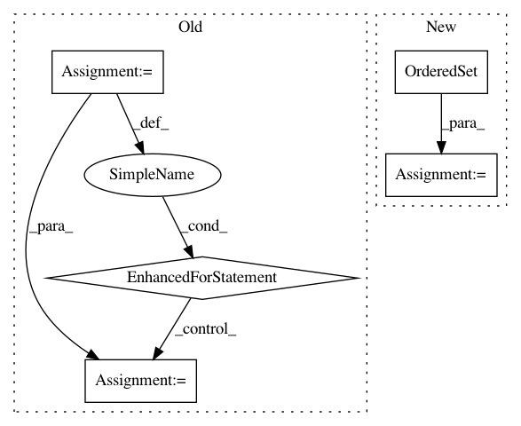

9a5a95e0f7bee96b38a2119198a4545ff65f83d1,src/python/pants/backend/python/thrift_builder.py,PythonThriftBuilder,run_thrifts,#PythonThriftBuilder#,42
Before Change
self.target.walk(collect_sources, predicate=is_py_thrift)
copied_sources = set()
for abs_base, relative_source in all_thrifts:
abs_source = os.path.join(abs_base, relative_source)
copied_source = os.path.join(self._workdir, relative_source)
safe_mkdir(os.path.dirname(copied_source))
shutil.copyfile(abs_source, copied_source)
copied_sources.add(copied_source)
for src in copied_sources:
if not self._run_thrift(src):
raise PythonThriftBuilder.CodeGenerationException(
"Could not generate .py from {}!".format(src))
After Change
def run_thrifts(self):
Generate Python thrift code.
bases = OrderedSet()
def collect_bases(target):
if isinstance(target, PythonThriftLibrary):
bases.add(os.path.join(get_buildroot(), target.target_base))
In pattern: SUPERPATTERN
Frequency: 3
Non-data size: 5
Instances
Project Name: pantsbuild/pants
Commit Name: 9a5a95e0f7bee96b38a2119198a4545ff65f83d1
Time: 2015-08-25
Author: john.sirois@gmail.com
File Name: src/python/pants/backend/python/thrift_builder.py
Class Name: PythonThriftBuilder
Method Name: run_thrifts
Project Name: pantsbuild/pants
Commit Name: 823bc0494ae30f6eb62015662af225369fb25fdc
Time: 2016-02-17
Author: stuhood@gmail.com
File Name: src/python/pants/bin/goal_runner.py
Class Name: GoalRunnerFactory
Method Name: _expand_specs
Project Name: pantsbuild/pants
Commit Name: 21abe297e0b16aa5038cc8d57dbc06b74b13c884
Time: 2016-05-02
Author: nhoward@twopensource.com
File Name: contrib/scrooge/src/python/pants/contrib/scrooge/tasks/scrooge_gen.py
Class Name: ScroogeGen
Method Name: synthetic_target_extra_dependencies